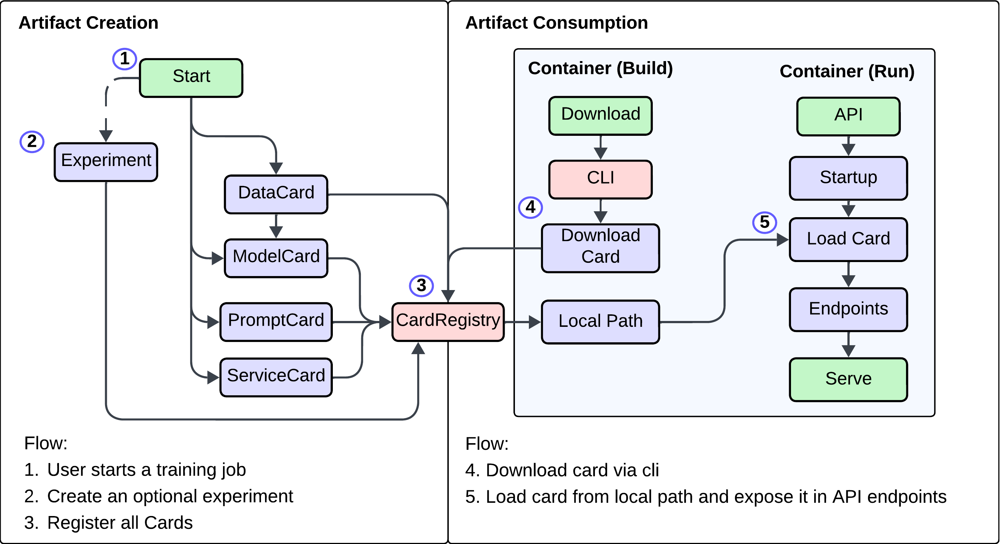

Overview¶
Creation/Consumption¶
As stated before, the core goal of OpsML is to provide quality control to AI artifact management. Artifact management encompasses both the creation of artifacts, such as through model training, data generation, and experimentation, and their consumption, such as through APIs. With this in mind, OpsML provides a variety of helpers that enable you to use your model(s)/service(s) in any API framework.
OpsML is intentionally designed not to focus on building 'auto-APIs,' as experience has shown that most API logic is more complex than simply serving a single model. APIs often involve multiple models and additional business logic that must be considered. To address this, we have prioritized developing standardized patterns and tools that seamlessly integrate OpsML into any framework.

Best Practices¶
There are a variety of ways to load a model/build an api. In the case of building containers, our recommendation is to download your model/service during the container build process and then load it on application startup. It is also possible to call registry.load_card() during application startup; however, this requires a network call to the opsml server, so we tend to recommend the former approach to limit network calls.
Building the API¶
Before loading an model into an api, we first need a model. The following code will create 2 models and bundle them into a ServiceCard.
You can find the full code in the examples directory; however, we will reproduce it here for your convenience.
Training the models and creating the ServiceCard¶
The following will: - Train two models (lightgbm and random forest) - Convert them to onnx when registering the cards - Bundle the models into a ServiceCard
from opsml.helpers.data import create_fake_data
from opsml.experiment import start_experiment, Experiment
from opsml import SklearnModel, TaskType, ModelCard, ServiceCard, Card
from opsml.model import ModelSaveKwargs
from lightgbm import LGBMClassifier
from sklearn import ensemble # type: ignore
import pandas as pd
def create_random_forest_classifier(
exp: Experiment,
X: pd.DataFrame,
y: pd.DataFrame,
) -> ModelCard:
# Create and train model
classifier = ensemble.RandomForestClassifier(n_estimators=5)
classifier.fit(X.to_numpy(), y.to_numpy().ravel())
model_interface = SklearnModel(
model=classifier,
sample_data=X[0:10],
task_type=TaskType.Classification,
)
model_interface.create_drift_profile(alias="drift", data=X) # (1)
modelcard = ModelCard(
interface=model_interface,
space="opsml",
name="rf_model",
)
# register model
exp.register_card(
card=modelcard,
save_kwargs=ModelSaveKwargs(save_onnx=True),
)
return modelcard
def create_lgb_classifier(
exp: Experiment,
X: pd.DataFrame,
y: pd.DataFrame,
) -> ModelCard:
# Create and train model
classifier = LGBMClassifier(n_estimators=5)
classifier.fit(X.to_numpy(), y.to_numpy().ravel())
model_interface = SklearnModel(
model=classifier,
sample_data=X[0:10],
task_type=TaskType.Classification,
)
model_interface.create_drift_profile(alias="drift", data=X)
modelcard = ModelCard(
interface=model_interface,
space="opsml",
name="lgb_model",
)
# register model
exp.register_card(
modelcard,
save_kwargs=ModelSaveKwargs( # (2)
save_onnx=True,
onnx={
"target_opset": {"ai.onnx.ml": 3, "": 9},
"options": {
"zipmap": False,
},
},
),
)
return modelcard
with start_experiment(space="opsml") as exp:
# create data
X, y = create_fake_data(n_samples=1200)
rf_model = create_random_forest_classifier(exp, X, y)
lgb_model = create_lgb_classifier(exp, X, y)
service_card = ServiceCard( # (3)
space="opsml",
name="classification_service",
cards=[
Card(alias="rf", card=rf_model),
Card(alias="lgb", card=lgb_model),
],
)
exp.register_card(service_card)
- A drift profile can be created even without the Scouter server
- Adding lightgbm-specific args for onnx conversion
- Bundle both ModelCards into a ServiceCard
Downloading the service¶
Once the service is registered, you can download it using the following command:
This will download all artifacts related to the service into the specified directory.
Building the api¶
The following code builds a simple FastAPI app that exposes the service and both models. We also show how you can use the AppState interface to manage the opsml service lifecycle. More information on this is below.
from contextlib import asynccontextmanager
from pathlib import Path
from fastapi import FastAPI, Request
from opsml.logging import RustyLogger, LogLevel, LoggingConfig
from opsml.app import AppState, ReloadConfig
import uuid
from pydantic import BaseModel, Field
from opsml.card import ModelCard
from opsml.model import ModelLoadKwargs
import numpy as np
from numpy.typing import NDArray
logger = RustyLogger.get_logger(
LoggingConfig(log_level=LogLevel.Debug),
)
# 8 features
class PredictRequest(BaseModel):
feature_1: float
feature_2: float
feature_3: float
feature_4: float
feature_5: float
feature_6: float
feature_7: float
feature_8: float
feature_9: float
feature_10: float
def to_f32_array(self) -> NDArray[np.float32]:
"""Converts the features to a numpy array of float32 with shape (1,10)"""
return np.array(
[
self.feature_1,
self.feature_2,
self.feature_3,
self.feature_4,
self.feature_5,
self.feature_6,
self.feature_7,
self.feature_8,
self.feature_9,
self.feature_10,
],
dtype=np.float32,
).reshape(1, -1)
class ModelResponse(BaseModel):
rf_class: int = Field(..., description="Predicted class from Random Forest model")
lg_class: int = Field(..., description="Predicted class from LightGBM model")
@asynccontextmanager
async def lifespan(app: FastAPI):
logger.info("Starting up FastAPI app")
app_state = AppState.from_path( # (1)
path=Path("app/service_artifacts"),
load_kwargs={
"rf": {"load_kwargs": ModelLoadKwargs(load_onnx=True)},
"lgb": {"load_kwargs": ModelLoadKwargs(load_onnx=True)},
},
reload_config=ReloadConfig(cron="0 0 0 * * *"), # (2)
)
app_state.start_reloader()
app.state.app_state = app_state
yield
logger.info("Shutting down FastAPI app")
app.state.app_state.shutdown()
app.state.app_state = None
app = FastAPI(lifespan=lifespan)
@app.post("/predict", response_model=ModelResponse)
async def predict(request: Request, payload: PredictRequest) -> ModelResponse:
# Grab the reformulated prompt and response prompt from the app state
rf_model: ModelCard = request.app.state.app_state.service["rf"] # (3)
lgb_model: ModelCard = request.app.state.app_state.service["lgb"]
data = payload.to_f32_array()
rf_prediction = rf_model.onnx_session.run({"X": data}, None)
lg_prediction = lgb_model.onnx_session.run({"X": data}, None)
rf_class = rf_prediction[0][0]
lg_class = lg_prediction[0][0]
return ModelResponse(rf_class=rf_class, lg_class=lg_class)
- Opsml exposes an
AppStateinterface that allows you to load an entire service from a path in a single call - The
AppStateinterface also provides a way to manage the lifecycle of the service, including reloading and shutdown - You can access a model by its alias using the
AppStateserviceproperty
AppState¶
AppState (short for Application State) is the core interface for managing the opsml state within an application. It's built to be able to load a ServiceCard for model access and ScouterQueues for real-time monitoring. It also provides the ability to configure a reload
task that will reload the entire AppState whenever a new version of the Service is detected on the server.
Basic Structure¶
from opsml.app import AppState, ReloadConfig
from opsml.scouter import c
app_state = AppState.from_path(
path=Path("app/service_artifacts"),
transport_config=HttpConfig(),
reload_config=ReloadConfig(cron="0 0 0 * * *"),
)
Arguments table¶
| Argument | Type (Required) | Description |
|---|---|---|
| path | Pathlib.Path (yes) |
The file path to the service artifacts directory. |
| transport_config | HttpConfig (no) |
Configuration for transporting ScouterQueue events. |
| reload_config | ReloadConfig (no) |
Configuration for the reload behavior of the AppState. |
| load_kwargs | dict (no) |
Dictionary of keyword arguments to pass to when loading - docs. |
Dynamic Reloading¶
The AppState interface enables dynamic reloading of services, addressing the common challenge of decoupled API deployment and training processes. This decoupling often results in APIs running outdated service or model versions. Traditionally, updating to the latest version would require either rebuilding the container or scheduling a cron job within the API to fetch the updated model. With AppState, you can configure a reload mechanism that continuously polls for service updates based on a specified cron schedule. When updates are detected, the AppState automatically reloads the ServiceCard and, if present, the ScouterQueue. More information can be found here.
Usage¶
As you've noticed, when creating a ServiceCard, all cards are required to have an alias. This alias allows you to conveniently access the card within the AppState.
In addition, you can also access the drift profile associated with a given model. For more information on the ScouterQueue, please refer to the Scouter documentation.